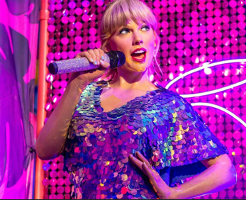
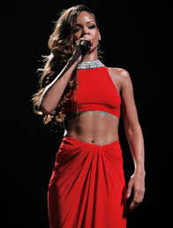

Top 5 Artisti Globali
La classifica degli artisti più ascoltati al mondo, aggiornata mensilmente in base ai dati delle principali piattaforme di streaming.
-
1
Bruno Mars

Grazie al successo dei suoi ultimi progetti e a collaborazioni divenute fenomeni virali a livello globale, Bruno Mars guida la classifica con oltre 134 milioni di ascoltatori mensili. La sua capacità di fondere funk, pop e soul in un sound accessibile e raffinato lo rende l'artista più ascoltato del momento.
134M ascoltatori/mese -
2
The Weeknd

Abel Tesfaye si conferma tra i nomi più rilevanti della scena globale con un mix riuscito di synth-pop e R&B contemporaneo. La longevità dei suoi brani e la coerenza della sua identità artistica garantiscono numeri di streaming straordinari anche per i progetti più datati della sua discografia.
Top 3 globale -
3
Taylor Swift

Presenza fissa nelle classifiche mondiali, Taylor Swift continua a dominare le chart grazie a una capacità senza pari di far debuttare ogni nuovo contenuto in posizione di vertice. Il suo ultimo tour ha consolidato ulteriormente il suo status di artista femminile più ascoltata al mondo.
Regina del pop globale -
4
Bad Bunny

Massimo esponente del reggaeton e della trap latina, Bad Bunny mantiene un pubblico vastissimo su entrambe le sponde dell'Atlantico. La sua produzione artistica — caratterizzata da un'estetica personale e da contenuti di rottura — lo rende il punto di riferimento assoluto per la scena urbana latinoamericana.
N.1 musica latina -
5
Rihanna

Nonostante la pubblicazione di album completi non sia frequente come in passato, Rihanna è tornata prepotentemente in Top 5 nel corso del 2026. La sua influenza culturale trasversale — che spazia dalla musica alla moda — e alcuni singoli recenti hanno riacceso l'entusiasmo globale, portandola a superare i 100 milioni di ascoltatori mensili.
100M+ ascoltatori/mese